El mapa de la línea del tiempo
Los lugares de cada etapa. Pasa el cursor por un punto para ver el hito (o haz clic). Usa los botones de abajo para filtrar por etapa.
Mapa base © OpenStreetMap · ● Grecia · ● Roma/Egipto · ● Edad Media · ● Renacimiento · ● Siglo XVII–1763 · ● 1763–1841 · ● 1848–1960 · ● 1960–actualidad
La sociedad de la Edad Antigua
Organización social: mundo de polis (ciudades-estado), sociedad estamental y esclavista (ciudadanos libres, metecos y esclavos); la democracia ateniense es de los ciudadanos.
Economía: agraria, artesanal y de comercio marítimo; el trabajo esclavo libera al ciudadano para la política y el pensamiento, así que el ocio (scholé) es un privilegio de la ciudadanía.
Organización social: República e Imperio, muy jerárquica (patricios, plebeyos, libertos y esclavos), unificada bajo la Pax Romana.
Economía: esclavista, urbana y de conquista, con moneda común; la élite acumula excedente y tiempo libre, y el Estado organiza el ocio de masas (panem et circenses).
 ⤢ ampliar
Discóbolo (copia romana) · Wikimedia Commons
⤢ ampliar
Discóbolo (copia romana) · Wikimedia Commons
Juegos Olímpicos y panhelénicos
¿Qué ocurre? se institucionalizan festivales religioso-deportivos que reúnen cada cuatro años a viajeros de toda la Hélade; una tregua sagrada (ekecheiría) garantiza el paso seguro.
Importancia: Primer desplazamiento colectivo por espectáculo, culto y competición: el antecedente del viaje por ocio y del actual "turismo de eventos".
 ⤢ ampliar
Busto de Aristóteles · Wikimedia Commons (dominio público)
⤢ ampliar
Busto de Aristóteles · Wikimedia Commons (dominio público)
El ocio (scholé) y la felicidad (eudaimonía)
¿Qué ocurre? Aristóteles define el ocio como el fin de la vida —contemplación, política y saber—, opuesto a la ascholía; la meta última es la felicidad o eudaimonía.
Importancia: Raíz cultural del ocio como valor y de la felicidad como meta; base teórica de toda la historia del ocio y del turismo. De scholé viene "escuela".
 ⤢ ampliar
Teatro de Epidauro · Wikimedia Commons
⤢ ampliar
Teatro de Epidauro · Wikimedia Commons
Oráculos, santuarios de salud y la theoría
¿Qué ocurre? surgen desplazamientos para consultar el oráculo (Delfos), sanar en los asclepieia (Epidauro, Cos) e "ir a ver" festivales (theoría).
Importancia: Antecedentes del turismo religioso y del turismo de salud/termal; la theoría prefigura el viaje por contemplación (raíz de "teoría").
 ⤢ ampliar
Coliseo de Roma · Wikimedia Commons
⤢ ampliar
Coliseo de Roma · Wikimedia Commons
El otium romano y el ocio de masas
¿Qué ocurre? se distingue el otium (ocio) del negotium (negocio). El Estado organiza el ocio de masas —circo y juegos— y multiplica los días festivos (feriae).
Importancia: El ocio se vuelve fenómeno social y político, de élite y de masas; se consolida el binomio trabajo/ocio que llega hasta hoy.
 ⤢ ampliar
Tabula Peutingeriana · Wikimedia Commons (dominio público)
⤢ ampliar
Tabula Peutingeriana · Wikimedia Commons (dominio público)
Calzadas, Pax Romana e itineraria
¿Qué ocurre? por primera vez existen las condiciones para viajar lejos con seguridad y comodidad: calzadas, posadas (mansiones) y guías de ruta.
Importancia: Aparece la infraestructura y el "sistema" del viaje: la base logística sin la cual el turismo posterior no sería posible.
Baiae: la villegiatura y el termalismo
¿Qué ocurre? surge un destino estacional de placer —balnearios termales, villas de lujo y vida social junto al mar— en la bahía de Nápoles.
Importancia: Antecedente directo del destino turístico, del turismo de sol y costa y del termalismo/turismo de salud.
 ⤢ ampliar
Colosos de Memnón · Wikimedia Commons
⤢ ampliar
Colosos de Memnón · Wikimedia Commons
Turismo cultural y la primera guía (Pausanias)
¿Qué ocurre? romanos viajan a Grecia y Egipto a "ver" monumentos; Pausanias escribe la Descripción de Grecia, considerada la primera guía de viajes.
Importancia: Nace el turismo cultural y patrimonial y el primer antecedente de la guía turística; prefigura el Grand Tour.
La sociedad de la Edad Media
Organización social: sociedad feudal (siglos VIII–XV): reyes y nobleza (dueños de la tierra y del poder militar), clero (poder religioso y cultural) y campesinos-siervos sin movilidad, unidos por el vasallaje.
Economía: cerrada y agraria, de autoabastecimiento en cada feudo; desde el s. XIII el comercio y las ferias reactivan las ciudades y las rutas.
{kind=link}
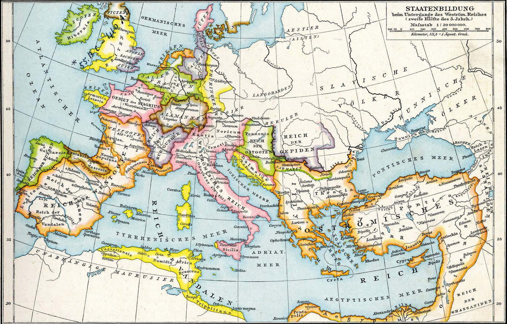
⤢ ampliar Europa a la caída del Imperio (476) · Wikimedia Commons (dominio público)Caída de Roma y feudalismo: el ocio como "contemplación de Dios"
¿Qué ocurre? Cae el Imperio romano de Occidente (476), Europa se ruraliza y nace el feudalismo (economía cerrada, siervos de la gleba); el ocio grecolatino se transforma en reposo religioso.
Importancia: Casi desaparece el desplazamiento por recreación; el tiempo libre se reduce al reposo dominical cristiano.
{kind=link}
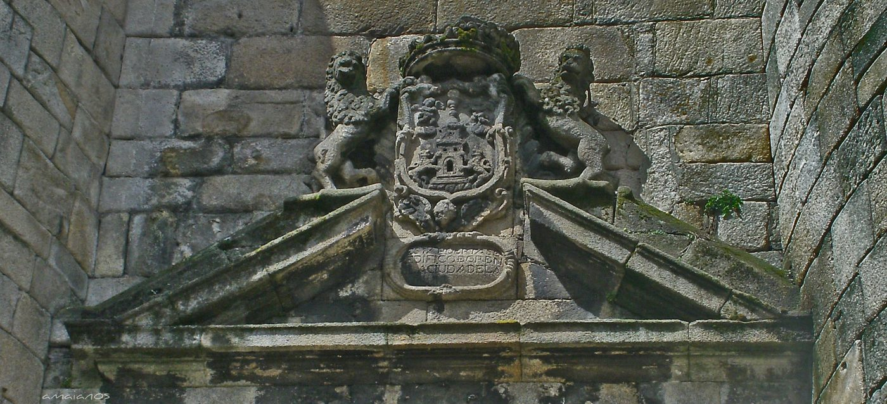
⤢ ampliar Camino de Santiago · Wikimedia CommonsLas peregrinaciones y el auge del Camino de Santiago
¿Qué ocurre? El motivo religioso genera los primeros desplazamientos medievales: peregrinaciones a Roma y Jerusalén y, desde el s. IX–X, el auge del Camino de Santiago, con hospederías y localidades de paso.
Importancia: La peregrinación es el gran "hecho social de desplazamiento" de la Alta Edad Media: antecedente del turismo religioso y de la infraestructura de alojamiento.
{kind=link}
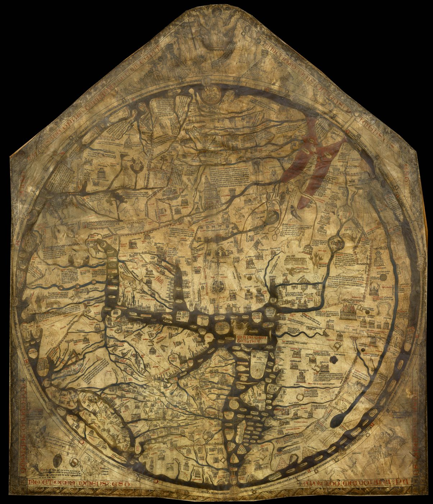
⤢ ampliar Mappa mundi de Hereford (c. 1300) · Wikimedia Commons (dominio público)Superado el "miedo del año 1000", despierta el deseo de conocer la tierra
¿Qué ocurre? Superado el temor apocalíptico del año 1000 (Duby), "se despertó un enorme deseo de conocer la tierra" (De Grazia); se desarrollan la medicina, la astrología y la alquimia.
Importancia: Es el giro cultural que reactiva el viaje; Jiménez Guzmán lo señala como el punto en que la etapa vuelve a generar desplazamientos.
{kind=link}
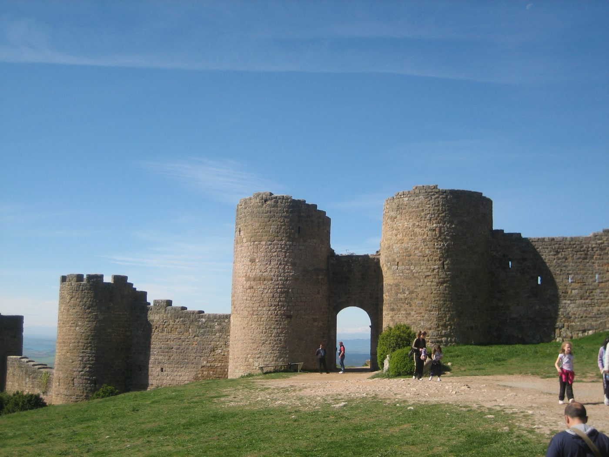
⤢ ampliar Castillo de Loarre (España) · Wikimedia CommonsLas Cruzadas y el comercio abren las rutas hacia Oriente
¿Qué ocurre? Las Cruzadas (desde 1096) llevan nobles y ejércitos a Oriente; las treguas abren el comercio y el paso de peregrinos; crecen las rutas del Mediterráneo y las repúblicas mercantiles (Venecia, Génova, Pisa).
Importancia: Los grandes desplazamientos militares y comerciales reactivan la circulación de personas y bienes y el contacto Oriente–Occidente.
{kind=link}
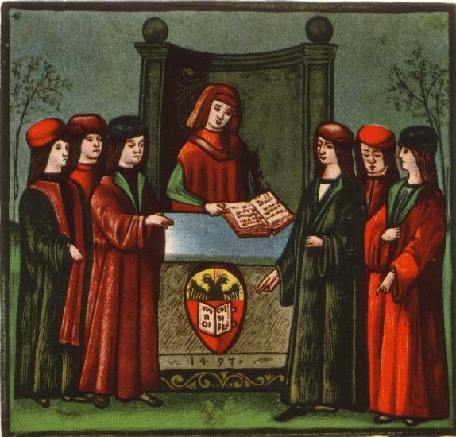
⤢ ampliar Escena universitaria (1497) · Wikimedia CommonsLas primeras guías y las universidades: el Códice Calixtino y Bolonia
¿Qué ocurre? Se escribe el Códice Calixtino (1140–1160), una de las primeras guías de viaje (del Camino); nacen las universidades (Bolonia, 1088) y con ellas el viaje estudiantil; se afianza la palabra "viatge/viaticum".
Importancia: Aparecen dos ideas muy turísticas: la guía de viaje y una nueva motivación de desplazamiento (el estudio); precedente del viaje formativo.
{kind=link}
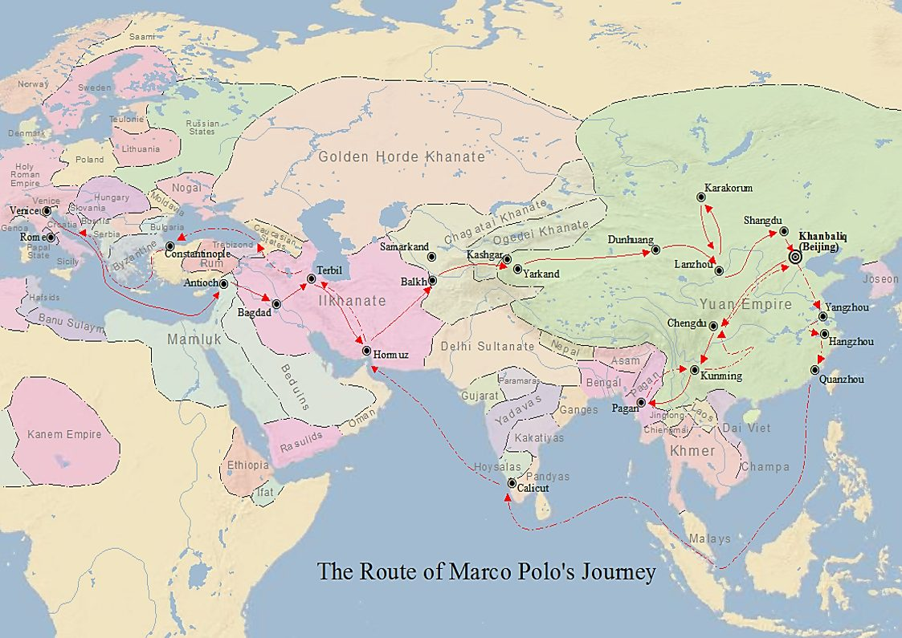
⤢ ampliar Ruta de Marco Polo · Wikimedia CommonsLos grandes viajeros: Marco Polo, Ibn Battuta y la literatura de viaje
¿Qué ocurre? Los grandes viajes producen relatos: Marco Polo ("El libro de las maravillas", 1271–1295), Ibn Battuta (1304–1369) y antes los árabes Al-Mamoun e Ibn Hauqal.
Importancia: Nace la literatura de viajes; Jiménez Guzmán cita a Kamel (1978), que les da "carácter turístico", y recuerda que la OMT los reconoce como antecedentes del turismo.
{kind=link}
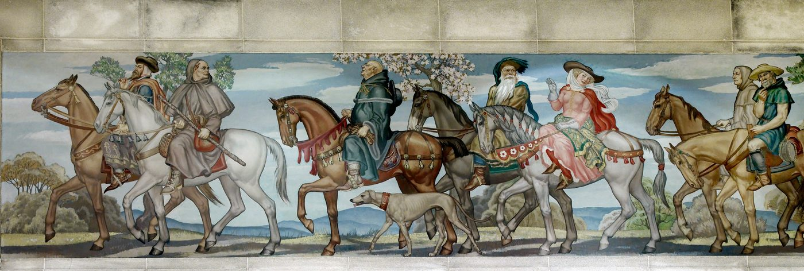
⤢ ampliar Los Cuentos de Canterbury (mural) · Wikimedia CommonsEl viaje como relato: Chaucer y Petrarca
¿Qué ocurre? Chaucer escribe los "Cuentos de Canterbury" (1387–1400) sobre un grupo de peregrinos; Petrarca asciende el Monte Ventoso (1336) y escribe una memoria del viaje.
Importancia: El viaje se vuelve materia literaria y experiencia personal; anticipa el "Viaje Cultural" del Renacimiento.
{kind=link}
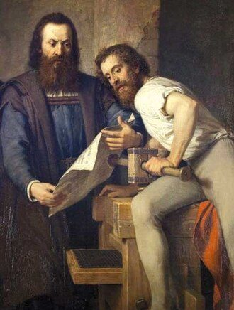
⤢ ampliar Gutenberg y la imprenta · Wikimedia CommonsFin de la Edad Media: Constantinopla, la imprenta y la brújula
¿Qué ocurre? La caída de Constantinopla (1453) bloquea las rutas a Asia e impulsa buscar nuevas; la imprenta de Gutenberg permite mapas y diarios de viaje; la brújula facilita la navegación; en 1492 Colón llega a América.
Importancia: Se crean las condiciones técnicas y culturales del gran viaje moderno; puente hacia el Renacimiento y los "desplazamientos culturales".
La sociedad del Renacimiento
Organización social: pirámide con el rey y la alta nobleza, el clero, y una burguesía y unos letrados en ascenso; se reduce el control de la Iglesia sobre el pensamiento, hacia una sociedad más laica y científica.
Economía: comercio en expansión y mecenazgo de familias ricas (los Médici); nacen el Estado moderno y la economía mercantil.
{kind=link}
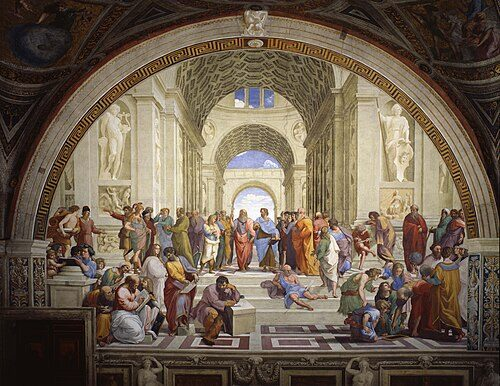
⤢ ampliar "La escuela de Atenas", Rafael (1509-1511) · dominio públicoEl Humanismo y el "renacer" del mundo antiguo
¿Qué ocurre? Nace el Humanismo (el estudio del hombre, la razón, las letras); se recupera la Antigüedad clásica y se reduce el control de la Iglesia sobre el pensamiento.
Importancia: Se viaja para "copiar, imitar y conservar el mundo antiguo" (Jiménez Guzmán); el arte y el saber se vuelven motivo de desplazamiento.
{kind=link}
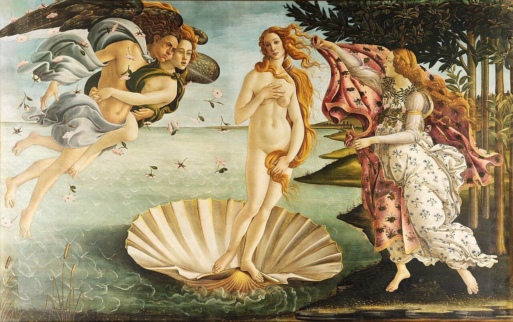
⤢ ampliar "El nacimiento de Venus", Botticelli (c. 1485), encargo de los Médici · dominio públicoEl mecenazgo: los Médici y las cortes
¿Qué ocurre? Cosme de Médici llega al poder (1434); los mecenas financian a artistas y científicos y convierten a Florencia y a Italia en el centro del arte y del humanismo.
Importancia: El mecenazgo genera el desplazamiento de artistas y eruditos hacia los centros de patrocinio; el arte se vuelve un atractivo que atrae visitantes.
{kind=link}
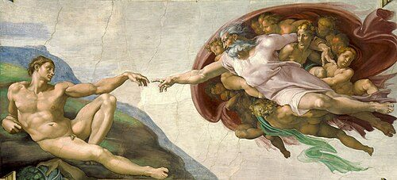
⤢ ampliar "La creación de Adán", Capilla Sixtina, Miguel Ángel · dominio públicoEl Viaje Cultural / Viaje humanista y el término "Turn"
¿Qué ocurre? El viaje humanista se vuelve el "hecho social de desplazamiento" del Renacimiento: nobles y eruditos viajan a Roma, Florencia y Venecia para formarse. En inglés se le llama "Turn" (viaje con regreso); "el ocio vuelve a escena" (De Grazia).
Importancia: Es el antecedente directo del turismo cultural y del futuro Grand Tour.
{kind=link}
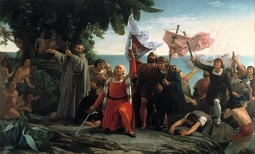
⤢ ampliar "Primer desembarco de Colón en América", Dióscoro Puebla (1862) · dominio públicoLos grandes descubrimientos y las nuevas rutas
¿Qué ocurre? La llegada de Colón a América (1492) y la exploración atlántica amplían el mundo conocido y abren nuevas rutas; se establece el sistema colonial (con la conquista y la trata como contexto histórico).
Importancia: El horizonte del viaje se expande a escala planetaria; los relatos de exploración alimentan el imaginario del viaje.
{kind=link}
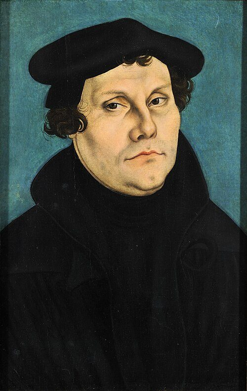
⤢ ampliar Retrato de Martín Lutero, Lucas Cranach el Viejo (1528) · dominio públicoLa Reforma Protestante (puente hacia el Grand Tour)
¿Qué ocurre? Lutero publica sus tesis (1517) y desafía a la Iglesia; la Reforma empieza a secularizar la vida y las costumbres (la diversión deja de verse como pecado).
Importancia: Prepara el "viaje de formación": según Jiménez Guzmán, es uno de los hechos que transforman el viaje de las élites hacia el Grand Tour.
{kind=link}
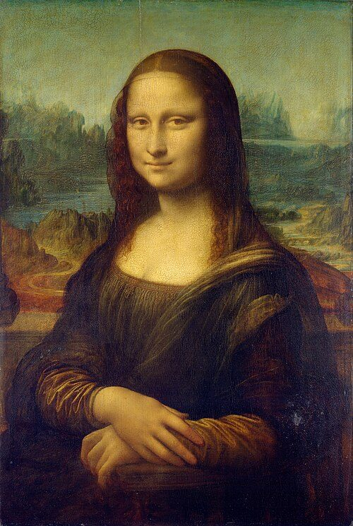
⤢ ampliar "La Gioconda" (Mona Lisa), Leonardo da Vinci · dominio públicoEl Alto Renacimiento: el arte como futuro patrimonio
¿Qué ocurre? Con el mecenazgo del papado y de las cortes, los maestros italianos (Leonardo, Miguel Ángel, Rafael) perfeccionan la anatomía, la perspectiva y la proporción.
Importancia: Estas obras y ciudades serán los grandes atractivos del turismo cultural europeo: el patrimonio que el Grand Tour irá a "ver".
{kind=link}
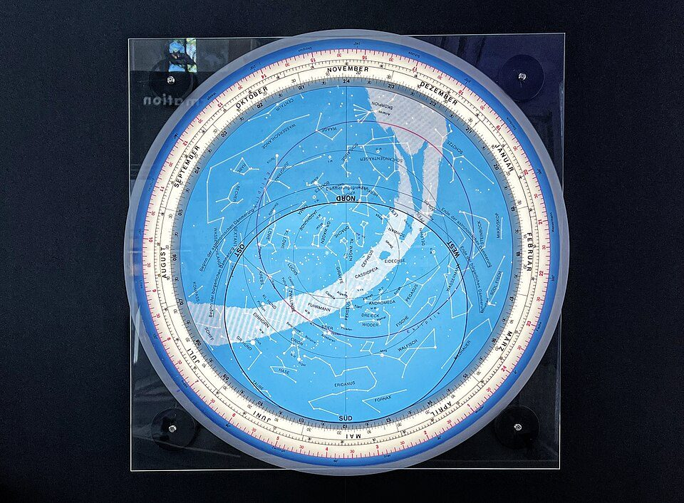
⤢ ampliar Astrolabio / planisferio · Wikimedia CommonsLa Revolución Científica y la navegación
¿Qué ocurre? Copérnico propone la teoría heliocéntrica (1543) y transforma la visión del cosmos; el astrolabio se consolida como instrumento de navegación (posición del sol y las estrellas, coordenadas y hora).
Importancia: La ciencia y los instrumentos hacen posible —y más seguro— el viaje de larga distancia: condición técnica del gran desplazamiento moderno.
La sociedad del Siglo XVII–1763
Organización social: sociedad estamental con una aristocracia dominante y una burguesía en ascenso; el tiempo y los recursos para viajar están reservados a los grupos acomodados.
Economía: crece el consumo de bienes y servicios de lujo y de ocio; las ciudades empiezan a transformarse para atender una demanda temporal de visitantes.
{kind=link}
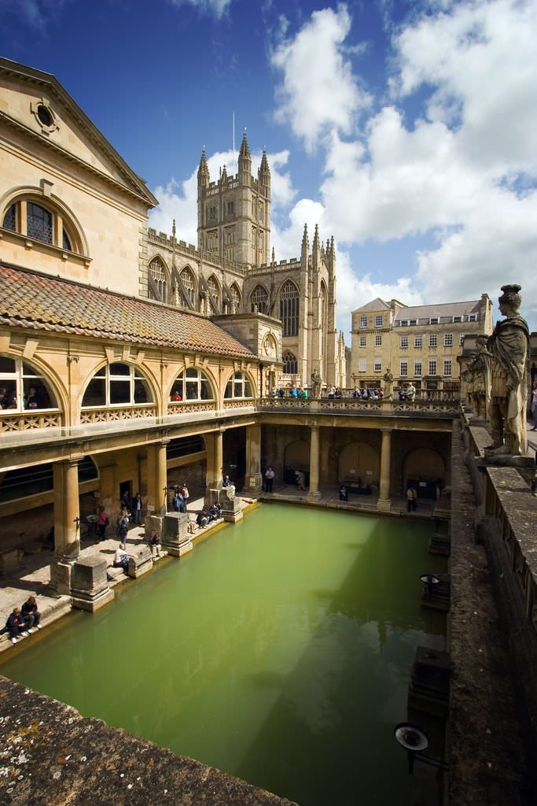
⤢ ampliar The Great Bath · Simpologist / World History Encyclopedia (CC BY-NC-SA 4.0)Bath y los balnearios: salud, ocio y sociabilidad
¿Qué ocurre? Las ciudades-balneario pasan de las aguas medicinales a articular salud, entretenimiento, sociabilidad y comercio; Bath se consolida como espacio urbano especializado para visitantes acomodados.
Importancia: Antecede al destino turístico moderno: el atractivo natural se combina con servicios, paseos, tiendas y vida social; el viaje incorpora consumo y estancia temporal.
{kind=link}
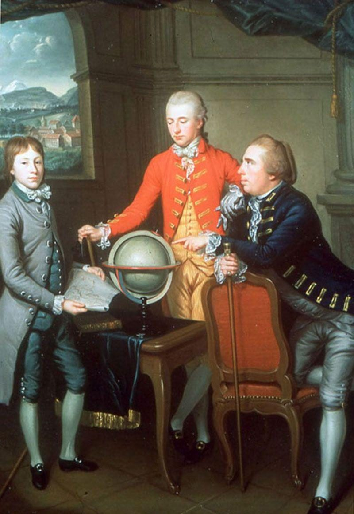
⤢ ampliar Duke of Hamilton on His Grand Tour · J. Preud'homme, 1774 (dominio público)Consolidación del Grand Tour
¿Qué ocurre? El viaje continental de jóvenes aristócratas británicos se consolida como práctica formativa estructurada, con itinerarios por Europa y especial interés por Francia e Italia.
Importancia: Antecedente claro del turismo cultural y educativo: visitar arte, monumentos y ciudades se integra en un proceso de formación y de construcción de prestigio.
{kind=link}
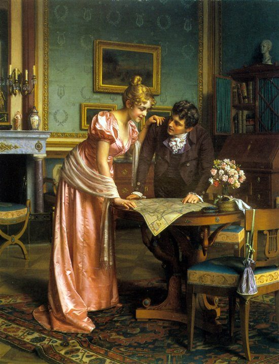
⤢ ampliar Planeando el "Grand Tour" · Emil Brack (s.f.) · via Historia National GeographicLa alta burguesía se incorpora al Grand Tour
¿Qué ocurre? El viaje educativo deja de ser exclusivo de la aristocracia y comienza a ser practicado también por la alta burguesía y nuevos grupos acomodados.
Importancia: Amplía la base social de las prácticas de ocio y consumo cultural; el turismo funciona como mecanismo de distinción y de movilidad simbólica entre grupos.
{kind=link}
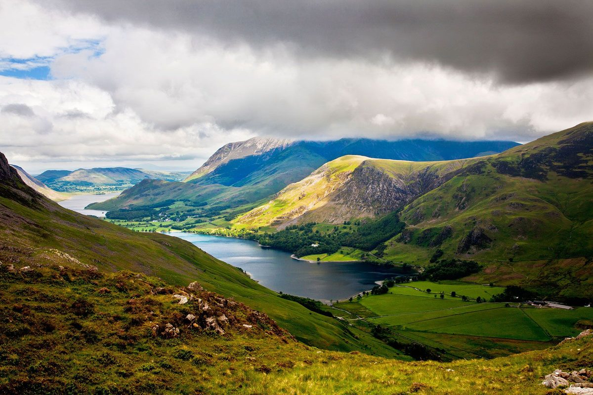
⤢ ampliar Distrito de los Lagos, Inglaterra · Condé Nast Traveler España, 2021El paisaje pintoresco y sublime: la naturaleza como atractivo
¿Qué ocurre? Cambia la valoración del paisaje: montañas, valles y costas antes considerados remotos empiezan a apreciarse como escenarios de experiencias estéticas y espirituales.
Importancia: Amplía el repertorio de atractivos: la naturaleza se convierte en objeto de contemplación y viaje; es un antecedente del turismo de naturaleza y paisajístico.
{kind=link}
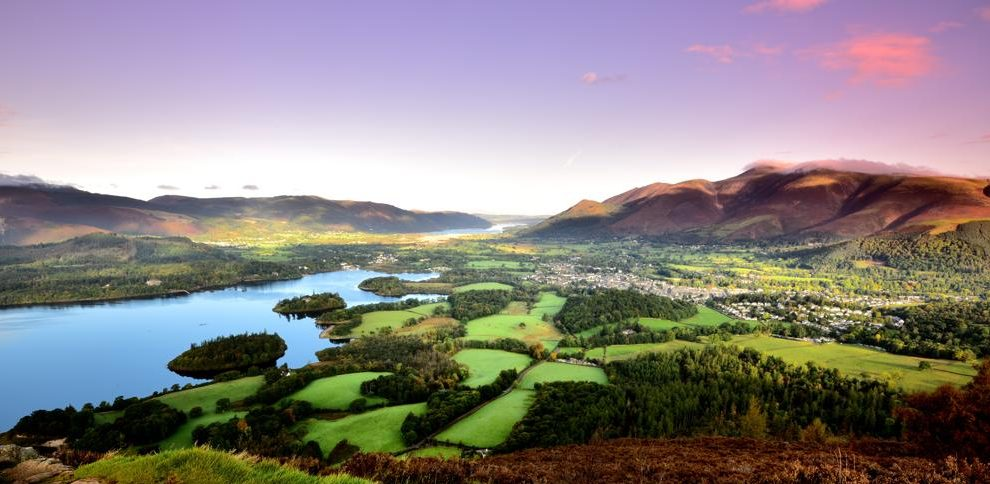
⤢ ampliar Lake District · La Vanguardia (DrewRawcliffe, 2018)Nuevos destinos: Lake District, Highlands y Gales
¿Qué ocurre? La nueva valoración estética transforma territorios periféricos en lugares deseables; se consolidan circuitos hacia el Distrito de los Lagos, las Highlands escocesas y la montaña galesa.
Importancia: El destino no está dado solo por lo físico: se construye con valores culturales, relatos, representaciones y prácticas de los viajeros.
{kind=link}
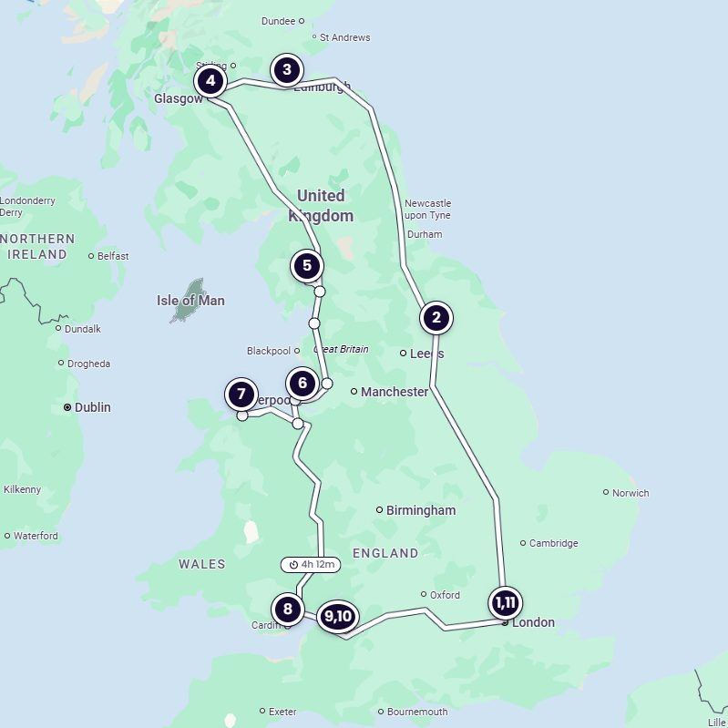
⤢ ampliar Itinerario por Gran Bretaña · Eurail, 2025Guerras europeas: crece el viaje doméstico
¿Qué ocurre? Los conflictos europeos interrumpen las rutas continentales del Grand Tour; los viajeros buscan alternativas dentro de Gran Bretaña y crecen los destinos paisajísticos nacionales.
Importancia: La movilidad turística depende de condiciones políticas y de seguridad: los destinos domésticos crecen cuando los circuitos internacionales se dificultan.
{kind=link}
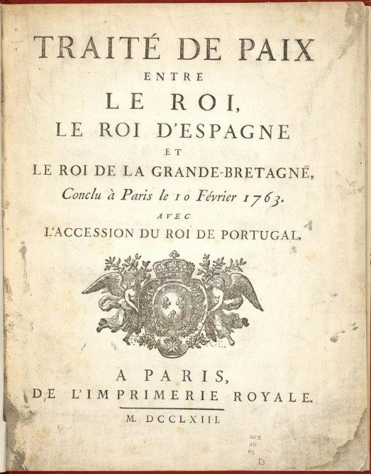
⤢ ampliar Traité de Paix · Imprimerie Royale, 1763 (dominio público, via ACAMI)Fin de la Guerra de los Siete Años: el Tratado de París
¿Qué ocurre? El Tratado de París (10 de febrero de 1763) pone fin a la Guerra de los Siete Años y reconfigura el contexto político europeo que condicionaba los circuitos de viaje.
Importancia: Cierra el periodo: la paz favorece la recuperación de la movilidad internacional, sin afirmar que el turismo "nace" en 1763.
La sociedad de 1763–1841
Organización social: transición de una economía agraria-comercial a una industrial y capitalista; crecen las ciudades y ganan peso la burguesía y los grupos profesionales.
Economía: la industrialización transforma la relación entre trabajo, tiempo libre, consumo y movilidad, y crea una nueva demanda de ocio.
{kind=link}
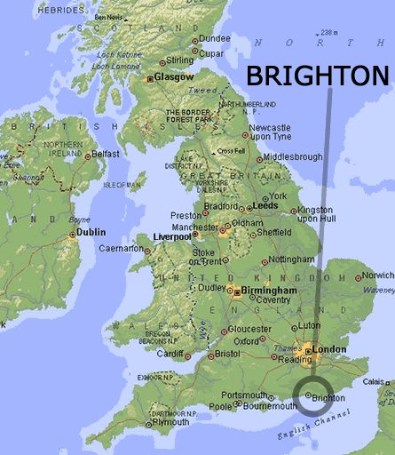
⤢ ampliar Mapa turístico de Brighton · Bristoleños.com, 2014Vacaciones a orillas del mar: Brighton y Margate
¿Qué ocurre? Se fortalece una práctica de viaje que convierte la costa en espacio de salud, ocio, sociabilidad y moda; Brighton se consolida como destino de verano y Margate atrae a la pequeña burguesía.
Importancia: La costa deja de ser espacio productivo o de tránsito y se vuelve destino turístico especializado: atractivo, estancia, alojamiento, entretenimiento y sociabilidad.
{kind=link}
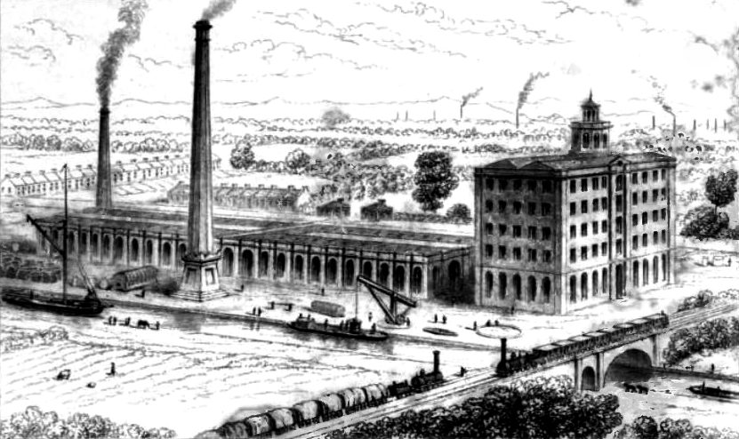
⤢ ampliar Bridgewater Foundry (1839 o antes) · Wikimedia Commons (dominio público)Revolución Industrial y nueva demanda de ocio
¿Qué ocurre? La industrialización transforma la economía y la estructura social: crece la población urbana, se consolida la burguesía y cambia la relación entre trabajo, tiempo libre, consumo y movilidad.
Importancia: Crea las condiciones sociales y económicas para ampliar la demanda de viajes de ocio; el turismo se vincula a una sociedad urbana, industrial y de consumo.
{kind=link}
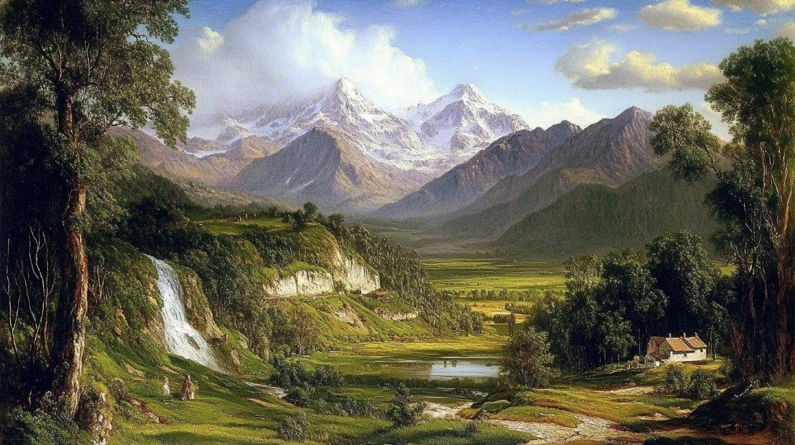
⤢ ampliar Las montañas Wetterhorn y Rosenlaui · H. Sattler (dominio público, HiSoUR)Turismo romántico: el paisaje como motivo de viaje
¿Qué ocurre? La sensibilidad romántica transforma la mirada sobre montañas, lagos, valles y ciudades históricas; la naturaleza pasa a valorarse por la experiencia estética y emocional que produce.
Importancia: El destino ya no depende solo de monumentos o balnearios, sino también de paisajes y de experiencias asociadas a la naturaleza.
{kind=link}
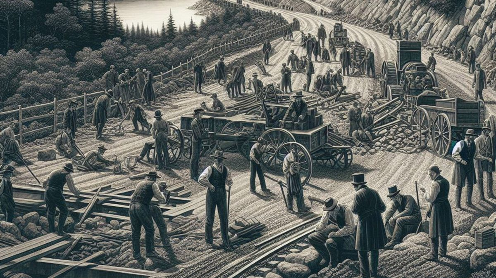
⤢ ampliar Construcción de una carretera (método macadán) · MotorpasiónInnovación vial: el sistema macadam
¿Qué ocurre? John Loudon McAdam desarrolla y difunde un método de construcción de carreteras más resistente, económico y adecuado para el tránsito de carruajes.
Importancia: Mejora una condición básica del turismo —la accesibilidad terrestre— con desplazamientos más seguros y previsibles antes de la expansión ferroviaria.
{kind=link}
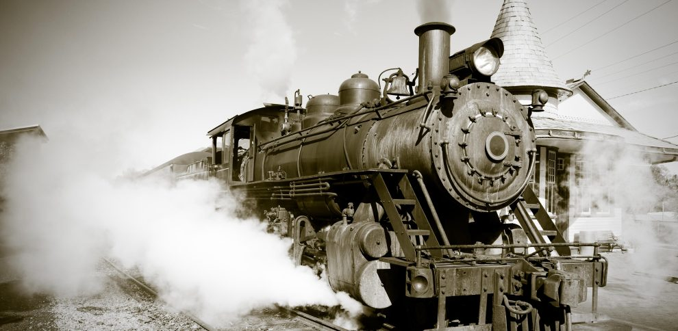
⤢ ampliar Locomotora de vapor antigua · La Vanguardia, 2022El ferrocarril de vapor de pasajeros
¿Qué ocurre? El Stockton–Darlington (1825) y el Liverpool–Manchester (1830) demuestran el potencial del ferrocarril para transportar personas de forma regular y a mayor escala.
Importancia: Reduce tiempos y amplía la accesibilidad; permite que los destinos reciban un número creciente de visitantes y favorece la expansión de los viajes por ocio.
{kind=link}
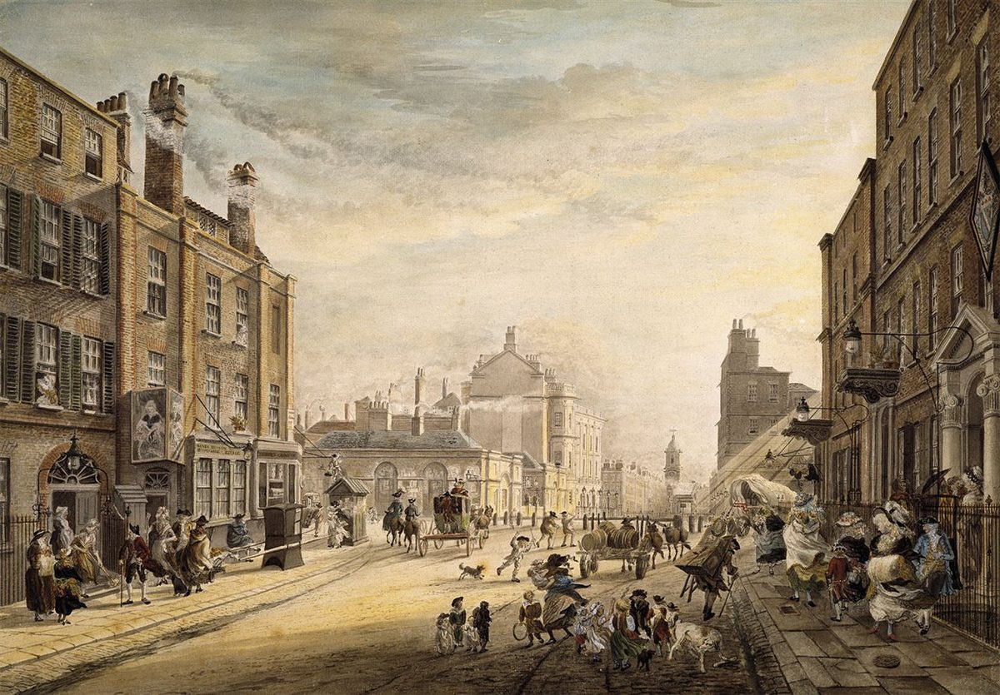
⤢ ampliar Plaza de Hannover, Londres · J. Miller, ca. 1775 (dominio público, via NatGeo Historia)Ampliación social del ocio y la excursión
¿Qué ocurre? El ocio empieza a vincularse con grupos sociales más amplios y con nuevas formas de consumo colectivo; el ferrocarril permite desplazamientos cortos y reduce barreras de acceso.
Importancia: Es un paso hacia la transición desde un turismo elitista hacia prácticas con mayor participación de sectores medios y populares.
{kind=link}
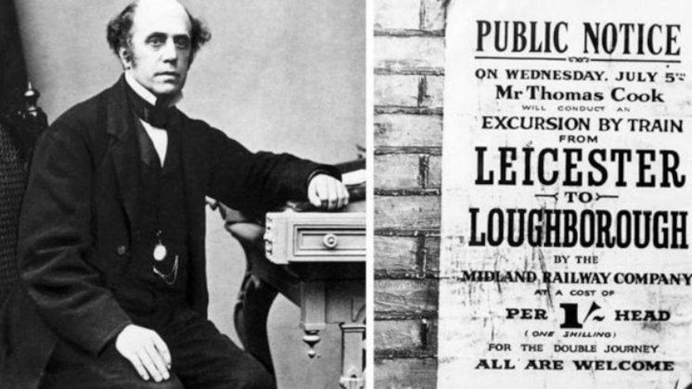
⤢ ampliar Thomas Cook y afiche de la excursión Leicester–Loughborough (1841) · Semana, 2019Thomas Cook: el viaje organizado moderno
¿Qué ocurre? Thomas Cook coordina un desplazamiento colectivo en tren entre Leicester y Loughborough, integrando el transporte y la organización del viaje para un grupo de participantes.
Importancia: Cambio cualitativo: el viaje lo organiza un intermediario que coordina servicios; es un antecedente directo de la agencia de viajes y del paquete turístico.
La sociedad de 1848–1960
Organización social: sociedad industrial y de posguerra; auge de la clase media urbana y de un movimiento obrero que conquista derechos (jornada, descanso, vacaciones).
Economía: industrial-capitalista, con ferrocarril, vapor, producción en masa y, después, aviación. Estas condiciones hacen posible el turismo moderno y su masificación.
 ⤢ ampliar
Gran Exposición de Londres, 1851 · Wikimedia Commons (dominio público)
⤢ ampliar
Gran Exposición de Londres, 1851 · Wikimedia Commons (dominio público)
Thomas Cook y la Gran Exposición de Londres
¿Qué ocurre? Thomas Cook organiza el traslado de más de 165.000 personas a la Gran Exposición con billetes de ferrocarril integrados y consolida sus excursiones organizadas.
Importancia: Sienta las bases de la agencia de viajes y del paquete turístico masivo: el viaje deja de ser solo de élites.
 ⤢ ampliar
Orient Express (postal histórica) · Wikimedia Commons (dominio público)
⤢ ampliar
Orient Express (postal histórica) · Wikimedia Commons (dominio público)
Orient Express
¿Qué ocurre? La Compagnie Internationale des Wagons-Lits inaugura el Orient Express, que conecta París con Estambul con lujo a bordo.
Importancia: Introduce la hotelería de lujo en movimiento y fija un estándar internacional de confort en el viaje.
 ⤢ ampliar
Ford Modelo T · Wikimedia Commons
⤢ ampliar
Ford Modelo T · Wikimedia Commons
El automóvil para las masas: Ford Modelo T
¿Qué ocurre? Ford lanza el Modelo T y la producción en cadena abarata el automóvil, poniéndolo al alcance de la clase media.
Importancia: Nace el turismo por carretera: libertad de desplazamiento individual, rutas, moteles y estaciones de servicio.
 ⤢ ampliar
St. Petersburg–Tampa Airboat Line, 1914 · Wikimedia Commons (dominio público)
⤢ ampliar
St. Petersburg–Tampa Airboat Line, 1914 · Wikimedia Commons (dominio público)
Primer vuelo comercial de pasajeros
¿Qué ocurre? La St. Petersburg–Tampa Airboat Line (Florida) realiza el primer servicio aéreo comercial regular de pasajeros del mundo.
Importancia: Demuestra la viabilidad del transporte aéreo de pasajeros: el germen de la aviación comercial.
 ⤢ ampliar
Estandarte de las 8 horas · Wikimedia Commons (dominio público)
⤢ ampliar
Estandarte de las 8 horas · Wikimedia Commons (dominio público)
La conquista de la jornada de 8 horas
¿Qué ocurre? Tras décadas de lucha obrera (Haymarket, 1886, origen del 1.º de mayo), la OIT aprueba en 1919 su primer convenio: 8 horas diarias y 48 semanales.
Importancia: Reducir la jornada crea el tiempo libre cotidiano: junto con las vacaciones pagadas, uno de los dos pilares del turismo de masas.
 ⤢ ampliar
Cámara de Diputados, Frente Popular (Francia, 1936) · Wikimedia Commons
⤢ ampliar
Cámara de Diputados, Frente Popular (Francia, 1936) · Wikimedia Commons
Las vacaciones pagadas: el ocio como derecho
¿Qué ocurre? En Francia, el Frente Popular establece por ley las vacaciones pagadas (congés payés); el derecho al descanso se consagra luego en la DUDH (1948, art. 24).
Importancia: Sin tiempo libre remunerado no hay turismo de masas: el ocio se vuelve un derecho social y dispara la demanda turística.
 ⤢ ampliar
Etiqueta de transporte aéreo (IATA) · Wikimedia Commons
⤢ ampliar
Etiqueta de transporte aéreo (IATA) · Wikimedia Commons
Creación de la IATA
¿Qué ocurre? En La Habana se funda la Asociación Internacional de Transporte Aéreo (IATA), que estandariza tarifas, rutas, billetes y normas de seguridad.
Importancia: Hace posible la interconexión de aerolíneas a escala global: ordena el sistema que sostendrá el turismo aéreo.
 ⤢ ampliar
Mapa de rutas de Pan Am · Wikimedia Commons
⤢ ampliar
Mapa de rutas de Pan Am · Wikimedia Commons
La era del jet: Boeing 707
¿Qué ocurre? Pan Am inicia vuelos transatlánticos regulares con el Boeing 707 (París–Nueva York).
Importancia: Reduce a la mitad los tiempos de viaje oceánico y da inicio al turismo internacional masivo por aire.
La sociedad de 1960–actualidad
Organización social: sociedad globalizada, de consumo y cada vez más digital; amplia clase media viajera y, luego, economía colaborativa.
Economía: de servicios, tecnología y plataformas, con creciente conciencia ambiental (sostenibilidad, overtourism).
 ⤢ ampliar
Boeing 747 · Wikimedia Commons
⤢ ampliar
Boeing 747 · Wikimedia Commons
Boeing 747: la era del Jumbo Jet
¿Qué ocurre? Pan Am realiza el primer vuelo comercial del Boeing 747 (Nueva York–Londres, 22 de enero de 1970).
Importancia: El fuselaje ancho reduce el costo por asiento y democratiza el vuelo transcontinental: turismo masivo internacional.
 ⤢ ampliar
Sede de la OMT / ONU Turismo, Madrid · Wikimedia Commons
⤢ ampliar
Sede de la OMT / ONU Turismo, Madrid · Wikimedia Commons
Creación de la OMT (Organización Mundial del Turismo)
¿Qué ocurre? Se crea la OMT (hoy ONU Turismo), que coordina y promueve el turismo mundial y produce estadísticas y políticas.
Importancia: Institucionaliza el turismo como sector económico y objeto de políticas públicas y gobernanza.
 ⤢ ampliar
Embarque en una aerolínea low-cost · Wikimedia Commons
⤢ ampliar
Embarque en una aerolínea low-cost · Wikimedia Commons
Aerolíneas low-cost (Ryanair, EasyJet)
¿Qué ocurre? Tras la desregulación aérea de EE. UU. (1978), en los años 90 se expanden las low-cost en Europa (Ryanair, EasyJet).
Importancia: Las tarifas bajísimas popularizan las escapadas de fin de semana (city breaks) como hábito de consumo global.
 ⤢ ampliar
Agencia de viajes en línea (imagen ilustrativa)
⤢ ampliar
Agencia de viajes en línea (imagen ilustrativa)
Agencias de viajes en línea (OTAs)
¿Qué ocurre? Nacen Expedia y Booking.com; el control de la reserva pasa de la agencia tradicional al consumidor final.
Importancia: Descentraliza la distribución de vuelos y hoteles a escala planetaria: el viajero arma su propio viaje.
 ⤢ ampliar
Economía de plataformas (sede tecnológica) · Wikimedia Commons
⤢ ampliar
Economía de plataformas (sede tecnológica) · Wikimedia Commons
Airbnb y la economía colaborativa
¿Qué ocurre? Se funda Airbnb (San Francisco); el modelo peer-to-peer (P2P) irrumpe en el alojamiento turístico.
Importancia: Altera el modelo hotelero, redefine las dinámicas urbanas y abre el debate sobre la turistificación.
 ⤢ ampliar
Año Internacional del Turismo Sostenible para el Desarrollo (OMT, 2017)
⤢ ampliar
Año Internacional del Turismo Sostenible para el Desarrollo (OMT, 2017)
Agenda 2030 y ODS: el giro a la sostenibilidad
¿Qué ocurre? La ONU adopta los ODS; el turismo sostenible entra al centro de la agenda (2017: Año Internacional del Turismo Sostenible).
Importancia: La sostenibilidad y el overtourism pasan a ser el marco para planificar y gestionar destinos.
 ⤢ ampliar
Aeropuerto durante la pandemia, 2020 · Wikimedia Commons
⤢ ampliar
Aeropuerto durante la pandemia, 2020 · Wikimedia Commons
COVID-19 y la disrupción global
¿Qué ocurre? El cierre masivo de fronteras reduce las llegadas internacionales cerca de un 73 % en 2020: el mayor shock de la historia del turismo.
Importancia: Acelera el trabajo remoto (nómadas digitales), lo digital y el interés por la sostenibilidad y el turismo de menor densidad.